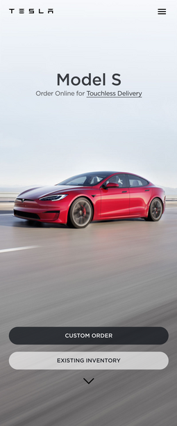
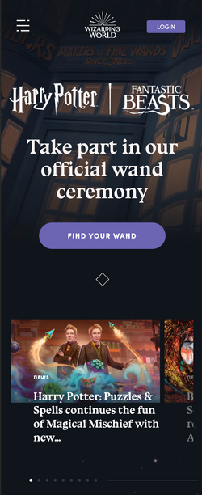
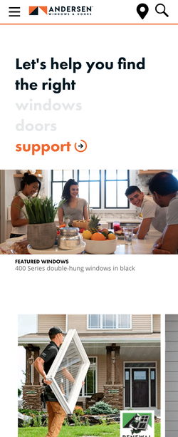

White Space and Clean Design
Tesla
tesla.com Tesla loves their white space! Each scroll on the page leads to preview a single vehicle. The space between the top of the page, the heading, the car picture, and call to action buttons create a look that is sleek, open, and appealing. The users' eyes are drawn to the three important aspects of the page without being bogged down by additional text, specs, or information. Comprehension for this page is optimized.
Contrast
Wizarding World
wizardingworld.com The magical site for Wizarding World illustrates the principle of contrast. The white text contrasts with dark background. The purple buttons also contrast with both the text, and the background. These both ad visual interested to the page. The font of the logo and franchises contrast the more traditional font of the text body, causing them to stand out.
Hick's Law
Andersen Windows & Doors
andersenwindows.com Andersen Windows & Doors make use of Hick's Law right at the top of their page. Rather than blast users with a bunch of awesome options (as many sellers' websites do), this site immediately directs the user to select one of three options. Tied with the introductory sentence above the selections, the user is able to navigate quickly to the applicable section of the website and immediately have irrelevent results filtered. This decreases the amount of time it takes them to make a choice.